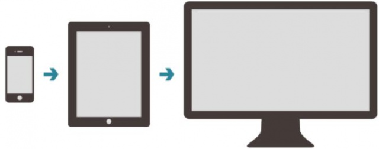
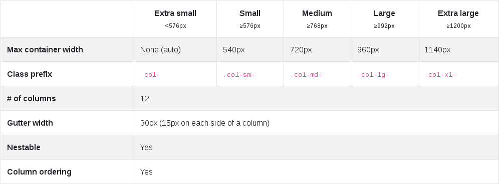

Framework CSS
Open Source
+ de 122 000 like sur Github
Crée en 2010 par


2 développeurs de Twitter
Actuellement, VERSION 4, maintenue par une équipe d'une dizaine de développeurs
BOOTSTRAP
Les grands principes
Mobile First
GRID : une grille pour facilier le positionnement
Que contient BOOTSTRAP ?
C'est un ensemble de :
- Composants HTML : card, forms, modal..
- Classes CSS : display, flex, text..
- Plugin Javascript : events, transitions..
- D'outils : préprocesseurs CSS (LESS, SASS), npm..
Avantages
- Facilite le responsive
- Compatibilité Navigateur (cross browser)
- Documentation complète
- Grande communauté, stackoverflow..
Inconvénients
- Temps de prise en main
- Uniformisation du web
Les principales alternatives
- Foundation de ZURB
- Bulma de Jeremy Thomas
- Ulkit de YOOtheme
- Semantic UI de Jack Lukic